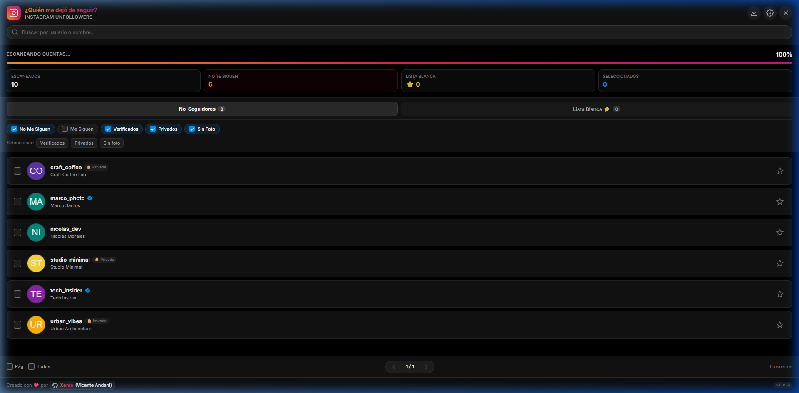

¿Por qué usar esta extensión?
100% Segura y Privada
Se ejecuta directamente en tu navegador aprovechando tu sesión activa de Instagram. Jamás te pedirá tus contraseñas ni enviará datos a servidores externos.
Pausas Anti-Bloqueo
Emula la cadencia de navegación humana con pausas de seguridad cada 5 peticiones para proteger tu cuenta de advertencias de acción por parte de Meta.
Lista Blanca Protegida
Marca a tus amigos o cuentas esenciales con una estrella. Quedarán protegidas para que nunca las dejes de seguir por error, con copias de seguridad en JSON.
Cómo Descargar la Extensión
Puedes elegir entre descargar el paquete precompilado o compilarlo tú mismo desde el código fuente.
Opción A: Descargar archivo ZIP listo para usar (Recomendado)
Descarga la última versión empaquetada desde la sección de lanzamientos (Releases) de GitHub:
📦 Ir a GitHub Releasesassets/images/step_releases.png
Opción B: Clonar y compilar tú mismo
Si eres desarrollador y prefieres compilar el proyecto manualmente con Angular 18:
cd ig-unfollowers-angular-extension
npm install
npm run build
Esto generará la carpeta dist/ lista para ser cargada en el navegador.
Cómo Añadir la Extensión a tu Navegador
Válido para Google Chrome, Brave, Microsoft Edge, Opera y navegadores Chromium.
Descomprimir el archivo
Si descargaste el archivo ig-unfollowers-extension.zip, descomprímelo en una carpeta accesible en tu ordenador (por ejemplo en tu carpeta de Documentos o Proyectos).
Abrir el gestor de extensiones y activar el Modo Desarrollador
Escribe en la barra de direcciones de tu navegador: chrome://extensions/ (o edge://extensions/, brave://extensions/).
En la esquina superior derecha de la pantalla, activa el interruptor de "Modo de desarrollador".
assets/images/step_dev_mode.png
Cargar la carpeta descomprimida
Haz clic en el botón "Cargar descomprimida" (o Load unpacked) que aparecerá en la parte superior izquierda.
Selecciona la carpeta donde descomprimiste el ZIP (o la carpeta dist/ generada tras compilar).
assets/images/step_load_unpacked.png
¡Listo! Extensión instalada
Verás la tarjeta de ¿Quién me dejó de seguir? - Instagram Unfollowers activa en tu lista de extensiones. Puedes fijarla en la barra superior para tenerla siempre a mano.
Cómo Usarla en Instagram
La extensión se integra automáticamente en la interfaz web de Instagram.
Inicia sesión en Instagram
Dirígete a instagram.com e inicia sesión con tu cuenta si aún no lo has hecho.
Localiza el Botón Flotante Arriba a la Derecha
En la esquina superior derecha verás el botón circular con el degradado oficial de Instagram. Haz clic en él para abrir el panel lateral deslizable (drawer).
assets/images/step_floating_button.png
Comenzar Auditoría
Pulsa el botón "Comenzar Auditoría". La herramienta analizará de forma segura tus seguidos y seguidores para calcular quién no te sigue de vuelta.

Filtros, Lista Blanca y Bajas Seguras
Usa los filtros rápidos (Verificados, Privados, Sin foto), protege a tus amigos con la estrella ⭐ y deja de seguir de forma segura a las cuentas seleccionadas con visualización de cola en vivo.
assets/images/step_unfollow_queue.png
Preguntas Frecuentes
¿Existe riesgo de que bloqueen mi cuenta de Instagram?
La extensión incorpora pausas humanas aleatorias y descansos obligatorios cada 5 acciones de baja para respetar los límites de la plataforma. Siempre se recomienda realizar bajas moderadas (por ejemplo 20 a 50 cuentas al día) para máxima seguridad.
¿Necesito introducir mi contraseña o tokens?
No. La extensión se ejecuta en tu propio navegador y utiliza la sesión autenticada que ya tienes abierta en Instagram de forma completamente local.
¿Puedo exportar los resultados a Excel?
Sí, en la barra superior del panel dispones de un botón para exportar la lista completa de no-seguidores en formato CSV compatible con Microsoft Excel y Google Sheets.